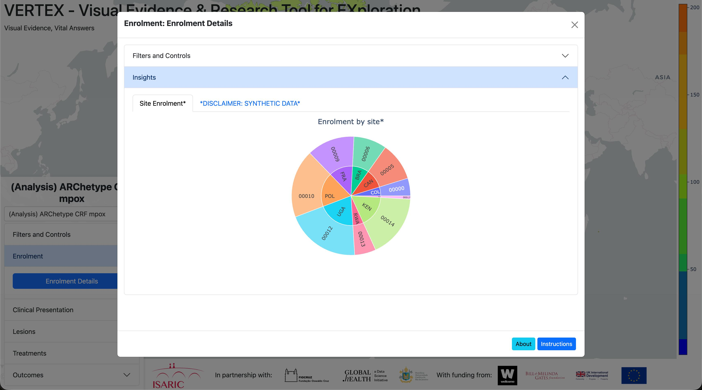

Overview
Purpose
This guide provides a brief introduction to the Visual Evidence & Research Tool for Exploration (VERTEX) dashboard and the Reusable Analytical Pipelines for Infectious Diseases (RAPID) code framework. It provides instructions for how to run the base VERTEX software on your local machine.
Introduction
VERTEX is a web-based Python application that presents graphs and tables relating to research questions that need to be quickly answered during an outbreak. This helps identification of key epidemiological factors and supports data-driven decision-making.

VERTEX - Starting Insight Panel
Open Source
VERTEX is open-source, which means that you can access and download the codebase from GitHub, and create new analysis projects for your analysis.
Types of Projects
At the moment, the VERTEX dashboard can display two types of projects.
Analysis Projects
Analysis projects retrieve data from a REDCap database using the API, preprocess this patient-level data and execute analysis code to answer research questions from a statistical analysis plan. The output of this analysis code is a series of figures and tables, which are presented in the dashboard, grouped together in insight panels.
For structuring analysis code, we borrow a concept called Reproducible Analytical Pipelines. This is intended to make analysis reproducible, efficient and auditable. We extend this concept to Reusable Analytical Pipelines for Infectious Diseases (RAPIDs), which supports the transportation of these pipelines to answer the similar research questions in similar contexts.
Static Projects
Static projects do not execute the analysis pipelines, but reproduce the figures and tables directly from aggregated (not patient-level) data files. These files can be provided directly or can be automatically created when the users runs an analysis project.
Each type of figure requires aggregated data in a specific structure, with accompanying metadata to provide other input parameters. We are currently refining this, so we do not have up-to-date documentation about each figure type. However, we can support this if you have aggregated data and you want to present results within a dashboard.
Setup & Configuration
Installation and Usage
To use VERTEX locally, clone the VERTEX GitHub repository and make sure that you have Python installed. There are several ways to run the VERTEX code.
We will demonstrate how to run the code at the command line using Docker and in VSCode without Docker, though we recommend using Docker if possible.
Docker at the command line
On the command line, navigate to the repository. Depending on how you cloned the repository, this may be in your Downloads folder or in the current working directory.
We recommend using Docker if you want to run VERTEX at the command line. You can build and run a Docker container for VERTEX with the following:
docker build -t isaric-vertex .
docker run -it --rm -v "$PWD":/app -p 8050:8050 isaric-vertex gunicorn --workers 1 --reload --bind 0.0.0.0:8050 vertex.descriptive_dashboard:serverFor using Docker within VSCode, see the VSCode Docker documentation.
VSCode without Docker
Open the VERTEX folder within VSCode. You need to create an environment from the VERTEX requirements. The simplest way to do this is Ctrl + Shift + P (or Cmd + Shift + P on MacOS), then click "Python: Create Environment...", ".venv" and choose a Python version that is >3.9. This will install a virtual environment using the requirements listed in pyproject.toml.
Next, you need to add a file .vscode/launch.json with the following:
{
"version": "0.2.0",
"configurations": [
{
"name": "ISARIC VERTEX",
"type": "python",
"request": "launch",
"module": "vertex.descriptive_dashboard",
"justMyCode": false,
"env": {
"PYTHONPATH": "${workspaceFolder}"
}
}
]
}You should now be able to run the application in debugging mode ("Run → Start Debugging") or without debugging ("Run → Run Without Debugging").
See the VSCode Python Environments documentation for more details.
VERTEX Dashboard
Once the application is running at the terminal or in VSCode, you will be able to open the local VERTEX dashboard at http://127.0.0.1:8050. You will see a menu on the left, and a world map with a colorbar.

VERTEX - Starting Dashboard
At the top of the menu is listed the current open project. You can switch between active projects using the dropdown immediately below. The current active projects are analysis projects that use low-fidelity synthetic datasets and static projects showing the results from completed ISARIC analyses.
The map shows the number of participants that were enrolled in this project by country. You can hover over each country for a more precise count of the number of participants.
Filters and Controls
Below the project selection box in the menu are a set of tabs, which are mostly specific to the selected project. Analysis projects, which retrieve the up-to-date patient-level data from a REDCap database and directly execute analysis code, have a tab called Filters and Controls. If you click on this, it will open up to show a set of core variables: sex at birth, age, country, admission date and outcome. You can select different combinations, which will filter the patient-level data and update the map accordingly.
How to
Creating a New VERTEX Project
VERTEX is designed to run one or multiple projects at the same time. A project is a self-contained workspace that defines which data should be loaded, how the dashboard should be configured, and which analyses should be displayed to the user. In practice, each VERTEX project is built around two main components: a Config File and a set of Insight Panels.
The Config File contains the project-level settings, such as the REDCap API URL and key, the initial map configuration, the project owner, output-saving options, and the list of Insight Panels that should be available in the dashboard. The Insight Panels are Python files responsible for generating the charts, tables, text blocks, and other analytical outputs shown inside VERTEX.
Config File
Let's start with the Config File. The Config File is a .json file that tells VERTEX how the project should behave. It defines how the project connects to the data source, how the map should be displayed, where public outputs should be saved, and which Insight Panels should appear in the dashboard. Below is the basic structure of a VERTEX Config File, followed by a short explanation of each variable.
config_file.json
{
"project_name": "",
"api_url": "",
"api_key": "",
"map_layout_center_latitude": 6,
"map_layout_center_longitude": -75,
"map_layout_zoom": 1.7,
"save_public_outputs": false,
"save_filtered_public_outputs": false,
"public_path": "PUBLIC/",
"is_public": false,
"project_owner": "",
"insight_panels_path": "insight_panels/",
"insight_panels": [
""
]
}- "project_name": Defines the name of the project.
- "api_url": Defines the API URL used to retrieve the project data.
- "api_key": Defines the authentication key used to connect to the API.
- "map_layout_center_latitude": Defines the initial center latitude of the map.
- "map_layout_center_longitude": Defines the initial center longitude of the map.
- "map_layout_zoom": Defines the initial zoom level of the map.
- "save_public_outputs": Indicates whether public dashboard outputs should be saved.
- "save_filtered_public_outputs": Indicates whether filtered public outputs should be saved.
- "public_path": Defines the folder where public files will be stored.
- "is_public": Indicates whether the project should be treated as a public project.
- "project_owner": Defines the owner or person responsible for the project.
- "insight_panels_path": Defines the folder where the Insight Panel Python files are stored.
- "insight_panels": Defines the list of Insight Panels that should be loaded into the dashboard.
Insight Panels
Insight Panels are the core analytical components of VERTEX. While the Config File defines the project setup, the Insight Panels define what the user will actually see in the dashboard. Each Insight Panel is a Python file that creates a specific analytical view, such as an enrolment overview, clinical summary, treatment analysis, data quality report, or any other project-specific analysis.
Each Insight Panel must follow a standard structure so that VERTEX can identify where the panel should appear in the interface and which visuals should be rendered. At a minimum, every Insight Panel needs two functions: define_button() and create_visuals(...).
import vertex.IsaricDraw as idw
import vertex.IsaricAnalytics as ia
def define_button():
"""
Defines the button in the main dashboard menu.
"""
button_item = ""
button_label = ""
output = {"item": button_item, "label": button_label}
return output
def create_visuals(df_map, df_forms_dict, dictionary, quality_report, filepath, suffix, save_inputs):
"""
Creates all visuals for the Insight Panel.
"""
return ()Let's first look at the define_button() function. This function defines where the Insight Panel will appear inside the VERTEX user interface. The button_item variable represents the menu group where the Insight Panel will be placed. The button_label variable represents the actual button that the user will click to open that Insight Panel. In other words, button_item controls the dashboard section, while button_label controls the name of the specific analytical view inside that section.

VERTEX - Insight Panel location example
To reproduce the structure shown in the figure above, the define_button() function should be configured as follows:
import vertex.IsaricDraw as idw
import vertex.IsaricAnalytics as ia
def define_button():
"""
Defines the button in the main dashboard menu.
"""
button_item = "Enrolment"
button_label = "Enrolment Details"
output = {"item": button_item, "label": button_label}
return output
def create_visuals(df_map, df_forms_dict, dictionary, quality_report, filepath, suffix, save_inputs):
"""
Creates all visuals for the Insight Panel.
"""
return ()Now let's address the second function, create_visuals(...). This function is simpler than it may look. Its purpose is to generate all the figures, tables, and text blocks that will be displayed inside the Insight Panel. The first four parameters, df_map, df_forms_dict, dictionary, and quality_report, are data-related. The df_map parameter is the main project dataset stored as a pandas DataFrame. It contains the core subject-level information used for maps, filters, and most dashboard analyses. The df_forms_dict parameter is a dictionary where each key represents a form name and each value is a pandas DataFrame containing the data for that specific form. The dictionary parameter is the data dictionary, also stored as a DataFrame, and describes the project variables, including field names, labels, field types, form names, sections, and branching logic when available. The quality_report parameter contains data quality information returned by the REDCap/API pipeline, such as validation results, missing values, or inconsistencies found in the data.
The remaining parameters are related to file generation and output control. The filepath parameter defines the base path where generated dashboard outputs, figure inputs, metadata, CSV files, and public artifacts should be saved. The suffix parameter works as an identifier for the Insight Panel, usually based on the panel file name, and helps organize graph IDs and output folders. Finally, save_inputs is a boolean flag that controls whether the input data and metadata used to generate each visual should be saved.
Inside the create_visuals(...) function, the main goal is to define all the visuals that will be generated for that specific Insight Panel. This usually includes preparing the required data, applying transformations or aggregations, creating the charts, and returning the final figures in a structured way so that VERTEX can render them in the dashboard. Every figure included in the return must necessarily be either a native Plotly figure or a figure generated through one of the available IsaricDraw functions. Although using pure Plotly is possible, we strongly recommend using IsaricDraw whenever possible, because it already follows the project’s visual standards, reduces repetitive code, and makes Insight Panels easier to maintain and scale.
It is also important to note that the order of the figures in the return statement directly affects the order in which they will appear in VERTEX. For example, if the function returns (fig_patients_bysite, disclaimer), the enrolment chart will be displayed first and the disclaimer will be displayed after it.
import pandas as pd
import vertex.IsaricDraw as idw
def define_button():
"""
Defines the button in the main dashboard menu.
"""
# Insight Panels are grouped by button_item.
# Multiple Insight Panels can share the same button_item,
# which means they will appear under the same dashboard menu group.
# However, the combination of button_item and button_label must be unique.
button_item = "Enrolment"
button_label = "Enrolment Details"
output = {"item": button_item, "label": button_label}
return output
def create_visuals(df_map, df_forms_dict, dictionary, quality_report, filepath, suffix, save_inputs):
"""
Creates all visuals for the Insight Panel.
"""
df_sunburst = (
df_map[["subjid", "site", "filters_country"]]
.groupby(["site", "filters_country"])
.nunique()
.reset_index()
)
df_sunburst["site"] = df_sunburst["site"].str.split("-", n=1).str[0]
fig_patients_bysite = idw.fig_sunburst(
df_sunburst,
title="Enrolment by site*",
path=["filters_country", "site"],
values="subjid",
suffix=suffix,
filepath=filepath,
save_inputs=save_inputs,
graph_label="Site Enrolment*",
graph_about="Shows the number of enrolled subjects by country and site.",
)
disclaimer_text = (
"Disclaimer: the underlying data for these figures is synthetic data. "
"Results may not be clinically relevant or accurate."
)
disclaimer_df = pd.DataFrame({"paragraphs": [disclaimer_text]})
disclaimer = idw.fig_text(
disclaimer_df,
suffix=suffix,
filepath=filepath,
save_inputs=save_inputs,
graph_label="*DISCLAIMER: SYNTHETIC DATA*",
graph_about=disclaimer_text,
)
return (fig_patients_bysite, disclaimer)
VERTEX - Complete Insight Panel example
Below will be a final example of how the config_file.json should be.
{
"project_name": "ARChetype CRF mpox (Synthetic)",
"api_url": "https://ncov.medsci.ox.ac.uk/api/",
"api_key": "27B9F4C93C8C2BCDB4EFCA9DA8717DC0",
"map_layout_center_latitude": 6,
"map_layout_center_longitude": -75,
"map_layout_zoom": 1.7,
"save_public_outputs": false,
"save_filtered_public_outputs": false,
"public_path": "PUBLIC/",
"is_public": false,
"project_owner": "alasdari.wilson@dtc.ox.ac.uk",
"insight_panels_path": "insight_panels/",
"insight_panels": [
"enrolment_details",
"presentation_demogcomor",
"presentation_symptoms",
"lesion_assessment",
"treatments_interventions",
"outcomes_complications"
]
}